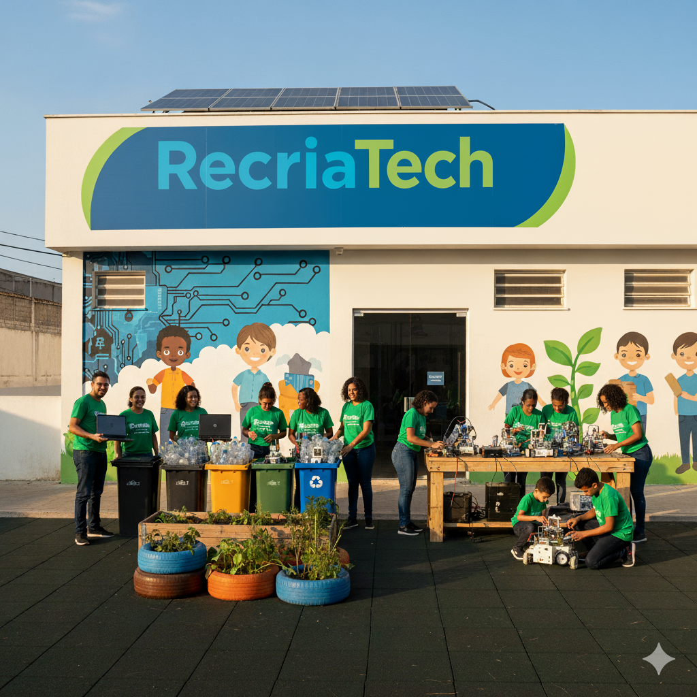

Quem Somos
A RecriaTech é uma organização sem fins lucrativos voltada à reciclagem de materiais eletrônicos e ao uso educativo da tecnologia. Nosso propósito é reduzir o impacto ambiental do lixo eletrônico, reaproveitando equipamentos e componentes para fins didáticos em escolas e projetos sociais. Acreditamos que é possível recriar o futuro por meio da sustentabilidade e da educação, promovendo inclusão digital, aprendizado prático e consciência ambiental. Atuamos em parceria com escolas, empresas e voluntários para transformar resíduos em oportunidades de conhecimento.
Entre em Contato
Email: contato@recriatech.org.br
Telefone: (61) 4455-8877
WhatsApp: (61) 90000-0000
Endereço: Rua dos Guarás, Guará I, Brasília - DF